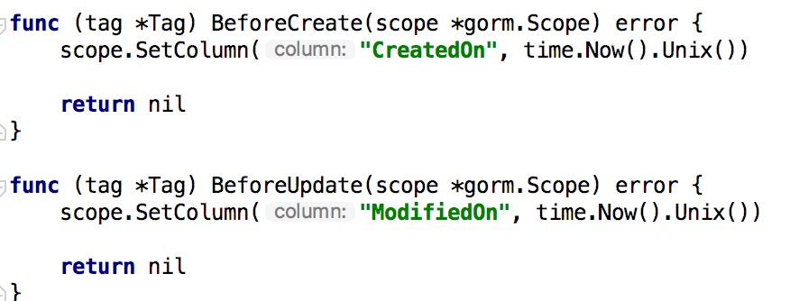
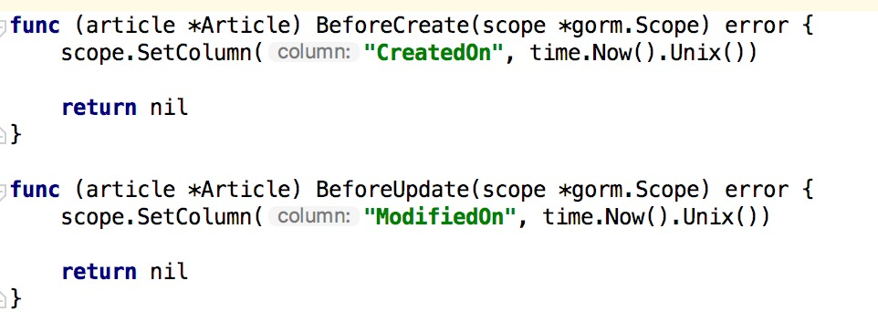

3.10 定製 GORM Callbacks
專案地址：https://github.com/EDDYCJY/go-gin-example
涉及知識點
- GORM
本文目標
GORM itself is powered by Callbacks, so you could fully customize GORM as you want
GORM 本身是由回撥驅動的，所以我們可以根據需要完全定製 GORM，以此達到我們的目的，如下：
- 註冊一個新的回撥
- 刪除現有的回撥
- 替換現有的回撥
- 註冊回撥的順序
在 GORM 中包含以上四類 Callbacks，我們結合專案選用 “替換現有的回撥” 來解決一個小痛點。
問題
在 models 目錄下，我們包含 tag.go 和 article.go 兩個檔案，他們有一個問題，就是 BeforeCreate、BeforeUpdate 重複出現了，那難道 100 個檔案，就要寫一百次嗎？
1、tag.go

2、article.go

顯然這是不可能的，如果先前你已經意識到這個問題，那挺OK，但沒有的話，現在開始就要改
解決
在這裡我們透過 Callbacks 來實作功能，不需要一個個檔案去編寫
實作Callbacks
開啟 models 目錄下的 models.go 檔案，實作以下兩個方法：
1、updateTimeStampForCreateCallback
// updateTimeStampForCreateCallback will set `CreatedOn`, `ModifiedOn` when creating
func updateTimeStampForCreateCallback(scope *gorm.Scope) {
if !scope.HasError() {
nowTime := time.Now().Unix()
if createTimeField, ok := scope.FieldByName("CreatedOn"); ok {
if createTimeField.IsBlank {
createTimeField.Set(nowTime)
}
}
if modifyTimeField, ok := scope.FieldByName("ModifiedOn"); ok {
if modifyTimeField.IsBlank {
modifyTimeField.Set(nowTime)
}
}
}
}
在這段方法中，會完成以下功能
-
檢查是否有含有錯誤（db.Error）
-
scope.FieldByName透過scope.Fields()取得所有欄位，判斷當前是否包含所需欄位for _, field := range scope.Fields() { if field.Name == name || field.DBName == name { return field, true } if field.DBName == dbName { mostMatchedField = field } } -
field.IsBlank可判斷該欄位的值是否為空func isBlank(value reflect.Value) bool { switch value.Kind() { case reflect.String: return value.Len() == 0 case reflect.Bool: return !value.Bool() case reflect.Int, reflect.Int8, reflect.Int16, reflect.Int32, reflect.Int64: return value.Int() == 0 case reflect.Uint, reflect.Uint8, reflect.Uint16, reflect.Uint32, reflect.Uint64, reflect.Uintptr: return value.Uint() == 0 case reflect.Float32, reflect.Float64: return value.Float() == 0 case reflect.Interface, reflect.Ptr: return value.IsNil() } return reflect.DeepEqual(value.Interface(), reflect.Zero(value.Type()).Interface()) } -
若為空則
field.Set用於給該欄位設定值，引數為interface{}
2、updateTimeStampForUpdateCallback
// updateTimeStampForUpdateCallback will set `ModifyTime` when updating
func updateTimeStampForUpdateCallback(scope *gorm.Scope) {
if _, ok := scope.Get("gorm:update_column"); !ok {
scope.SetColumn("ModifiedOn", time.Now().Unix())
}
}
scope.Get(...)根據入參取得設定了字面值的引數，例如本文中是gorm:update_column，它會去查詢含這個字面值的欄位屬性scope.SetColumn(...)假設沒有指定update_column的欄位，我們預設在更新回撥設定ModifiedOn的值
註冊Callbacks
在上面小節我已經把回撥方法編寫好了，接下來需要將其註冊進 GORM 的鉤子裡，但其本身自帶 Create 和 Update 回撥，因此呼叫替換即可
在 models.go 的 init 函式中，增加以下語句
db.Callback().Create().Replace("gorm:update_time_stamp", updateTimeStampForCreateCallback)
db.Callback().Update().Replace("gorm:update_time_stamp", updateTimeStampForUpdateCallback)
驗證
訪問 AddTag 介面，成功後檢查資料庫，可發現 created_on 和 modified_on 欄位都為當前執行時間
訪問 EditTag 介面，可發現 modified_on 為最後一次執行更新的時間
拓展
我們想到，在實際專案中硬刪除是較少存在的，那麼是否可以透過 Callbacks 來完成這個功能呢？
答案是可以的，我們在先前 Model struct 增加 DeletedOn 變數
type Model struct {
ID int `gorm:"primary_key" json:"id"`
CreatedOn int `json:"created_on"`
ModifiedOn int `json:"modified_on"`
DeletedOn int `json:"deleted_on"`
}
實作Callbacks
開啟 models 目錄下的 models.go 檔案，實作以下方法：
func deleteCallback(scope *gorm.Scope) {
if !scope.HasError() {
var extraOption string
if str, ok := scope.Get("gorm:delete_option"); ok {
extraOption = fmt.Sprint(str)
}
deletedOnField, hasDeletedOnField := scope.FieldByName("DeletedOn")
if !scope.Search.Unscoped && hasDeletedOnField {
scope.Raw(fmt.Sprintf(
"UPDATE %v SET %v=%v%v%v",
scope.QuotedTableName(),
scope.Quote(deletedOnField.DBName),
scope.AddToVars(time.Now().Unix()),
addExtraSpaceIfExist(scope.CombinedConditionSql()),
addExtraSpaceIfExist(extraOption),
)).Exec()
} else {
scope.Raw(fmt.Sprintf(
"DELETE FROM %v%v%v",
scope.QuotedTableName(),
addExtraSpaceIfExist(scope.CombinedConditionSql()),
addExtraSpaceIfExist(extraOption),
)).Exec()
}
}
}
func addExtraSpaceIfExist(str string) string {
if str != "" {
return " " + str
}
return ""
}
-
scope.Get("gorm:delete_option")檢查是否手動指定了delete_option -
scope.FieldByName("DeletedOn")取得我們約定的刪除欄位，若存在則UPDATE軟刪除，若不存在則DELETE硬刪除 -
scope.QuotedTableName()返回引用的表名，這個方法 GORM 會根據自身邏輯對錶名進行一些處理 -
scope.CombinedConditionSql()返回組合好的條件SQL，看一下方法原型很明瞭func (scope *Scope) CombinedConditionSql() string { joinSQL := scope.joinsSQL() whereSQL := scope.whereSQL() if scope.Search.raw { whereSQL = strings.TrimSuffix(strings.TrimPrefix(whereSQL, "WHERE ("), ")") } return joinSQL + whereSQL + scope.groupSQL() + scope.havingSQL() + scope.orderSQL() + scope.limitAndOffsetSQL() } -
scope.AddToVars該方法可以新增值作為SQL的引數，也可用於防範SQL注入func (scope *Scope) AddToVars(value interface{}) string { _, skipBindVar := scope.InstanceGet("skip_bindvar") if expr, ok := value.(*expr); ok { exp := expr.expr for _, arg := range expr.args { if skipBindVar { scope.AddToVars(arg) } else { exp = strings.Replace(exp, "?", scope.AddToVars(arg), 1) } } return exp } scope.SQLVars = append(scope.SQLVars, value) if skipBindVar { return "?" } return scope.Dialect().BindVar(len(scope.SQLVars)) }
註冊Callbacks
在 models.go 的 init 函式中，增加以下刪除的回撥
db.Callback().Delete().Replace("gorm:delete", deleteCallback)
驗證
重啟服務，訪問 DeleteTag 介面，成功後即可發現 deleted_on 欄位有值
小結
在這一章節中，我們結合 GORM 完成了新增、更新、查詢的 Callbacks，在實際專案中常常也是這麼使用
畢竟，一個鉤子的事，就沒有必要自己手寫過多不必要的程式碼了
（注意，增加了軟刪除後，先前的程式碼需要增加 deleted_on 的判斷）
參考
本系列示例程式碼
文件
關於
修改記錄
- 第一版：2018年02月16日釋出文章
- 第二版：2019年10月01日修改文章
？
如果有任何疑問或錯誤，歡迎在 issues 進行提問或給予修正意見，如果喜歡或對你有所幫助，歡迎 Star，對作者是一種鼓勵和推進。
我的微信公眾號